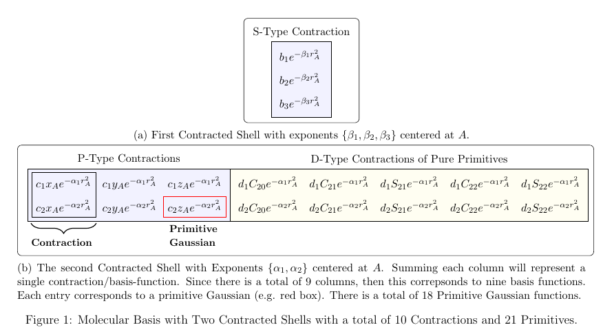
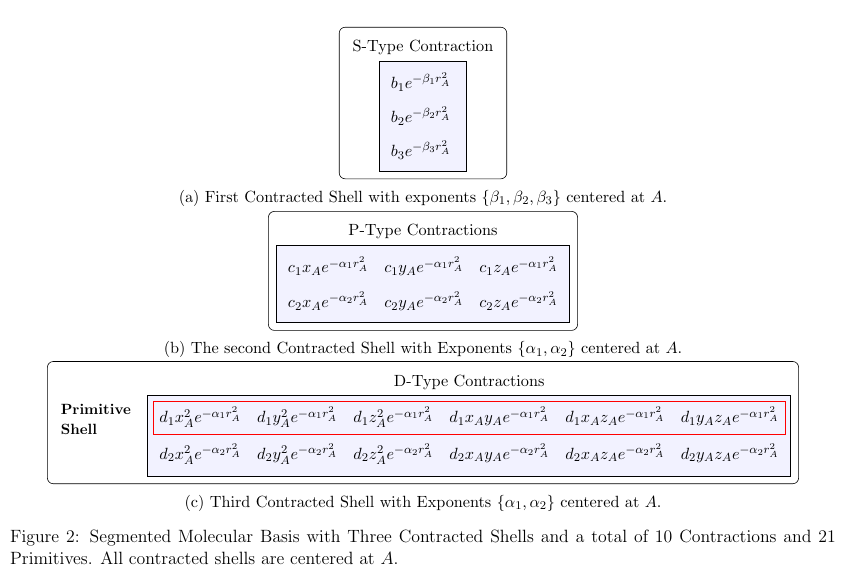

Conventions
This following page outlines the basis-set conventions that CuChemTools uses to evaluate various quantities.
Gaussian Primitives
CuChemTools supports both Cartesian and Spherical primitive Gaussian type orbitals.
Cartesian
Normalized Cartesian primitive Gaussian with order \((i, j, k)\) centered at position \(\mathbf{A} = (A_x, A_y, A_z)\) is written as
where \(i, j, k\) are positive integers, \(N\) is the L2-normalization constant and \(\alpha\) is the Gaussian width parameter. The degree \(l\) of a Cartesian primitive Gaussian is defined as \(l = i + j + k\).
Spherical/Pure
Normalized spherical primitives Gaussians with degree \(l\) and order \(m\) centered at position \(\mathbf{A} = (A_x, A_y, A_z)\) is written as
where \(Y_{lm}\) is the real spherical harmonics, \(N\) is the L2-normalization constant, and \(\alpha\) is the Gaussian width parameter.
CuChemTools uses the real regular solid harmonics, i.e. \(S_{lm} = r_A^l Y_{lm}\), since when \(l=0,1\), it matches its Cartesian Gaussian primitives. Further, it uses the Cartesian representation for \(S_{lm}\) in-order to avoid the conversion from Cartesian \((x, y, z)\) to spherical coordinates \((r, \theta, \phi)\).
For example, the regular solid harmonics for degree 2 is
Contractions
CuChemTools uses linear combination of primitives Gaussian as basis-functions (known as contracted Gaussian type-orbitals or contractions):
where \(K_i \in \{C, S\}\) denotes whether it is Cartesian or Spherical, \(d_j\) are the contraction coefficients and \(b_j\) is a primitive Gaussian with fixed parameters, except for \(\alpha_j\), for all \(j\). The contractions are not required to be normalized, and if they are, the contraction coeffcients are assumed to contain the normalization constant.
Basis-set Groupings (Shells)
The grouping of all basis-functions/contractions \(\{\Phi_i^{K_i}: 0 \leq i \leq M \}\) is the basis-set. However, the contractions are grouped together more simply, called Generalized Contraction Shells, based on having identical exponents \(\alpha\), and centers \(A\).
If they are instead grouped together, based on having identical \(\alpha\), centers \(A\), \(K \in \{C, S\}\), and degree \(l\), then they are called Segmented Contraction Shells.
The following shows an example of a generalized contracted shell:
{kind=link}
The following shows an example of conversion to an segmented contracted shell:
{kind=link}
Basis Set Ordering
CuChemTools follows the same basis-set ordering that Gaussian computational chemistry software uses. Note that for spherical orders, the positive orders \(m\geq0\) are associated with cosine function, denoted as c, and the negative orders \(m<0\) are associated with sine function, denoted as s. Thus “s21” implies it is a solid harmonic with \(l=2\) and \(m=-1\).
Degree |
Cartesian Order |
Spherical Order |
|---|---|---|
0 (s-type) |
1 |
N/A |
1 (p-type) |
x,y,z |
N/A |
2 (d-type) |
xx,yy,zz,xy,xz,yz |
c0, c1, s1, c2, s2 |
3 (f-type) |
xxx, yyy, zzz, xyy, xxy, xxz, xzz, yzz, yyz, xyz |
c0, c1, s1, c2, s2, c3, s3 |
4 (g-type) |
zzzz, yzzz, yyzz, yyyz, yyyy, xzzz, xyzz, xyyz, xyyy, xxzz, xxyz, xxyy, xxxz, xxxy, xxxx |
c0, c1, s1, c2, s2, c3, s3, c4, s4 |